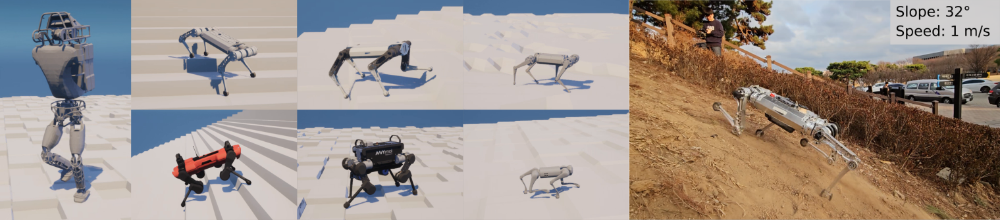

Korea Advanced Institute of Science and Technology (KAIST)

Abstract
Several earlier studies have shown impressive control performance in complex robotic systems by designing
the controller using a neural network and training it with model-free reinforcement learning. However,
these outstanding controllers with natural motion style and high task performance are developed through
extensive reward engineering, which is a highly laborious and time-consuming process of designing numerous
reward terms and determining suitable reward coefficients. In this work, we propose a novel reinforcement
learning framework for training neural network controllers for complex robotic systems consisting of both
rewards and constraints. To let the engineers appropriately reflect their intent to constraints and handle
them with minimal computation overhead, two constraint types and an efficient policy optimization algorithm
are suggested. The learning framework is applied to train locomotion controllers for several legged robots with
different morphology and physical attributes to traverse challenging terrains. Extensive simulation and real-world
experiments demonstrate that performant controllers can be trained with significantly less reward engineering, by
tuning only a single reward coefficient. Furthermore, a more straightforward and intuitive engineering process
can be utilized, thanks to the interpretability and generalizability of constraints.
@ARTICLE{kim2024legConstrainedRL,
author={Kim, Yunho and Oh, Hyunsik and Lee, Jeonghyun and Choi, Jinhyeok and Ji, Gwanghyeon and Jung, Moonkyu and Youm, Donghoon and Hwangbo, Jemin},
journal={IEEE Transactions on Robotics},
title={Not Only Rewards but Also Constraints: Applications on Legged Robot Locomotion},
year={2024},
volume={40},
number={},
pages={2984-3003},
keywords={Robots;Legged locomotion;Reinforcement learning;Optimization;Neural networks;Quadrupedal robots;Training;Constrained reinforcement learning (RL);legged locomotion;RL},
doi={10.1109/TRO.2024.3400935}
}